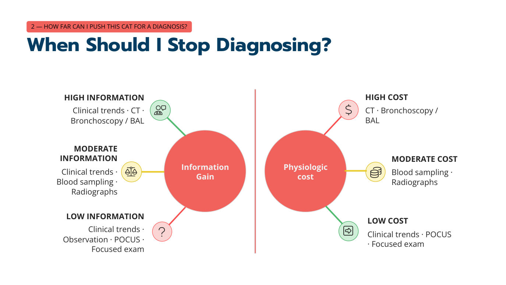
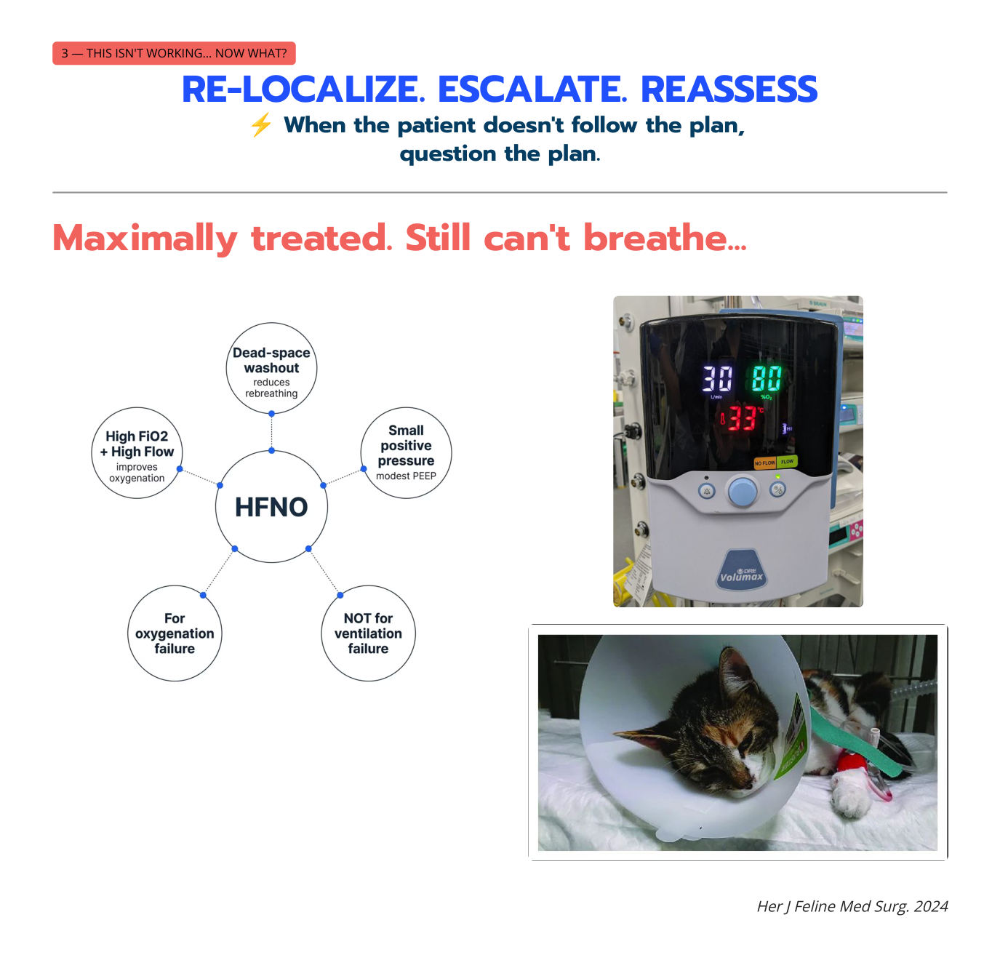

喘不過氣的貓（二）：下一步怎麼做？
主講：Elise Boller, DVM, DACVECC
TSFM Annual Conference 2026｜Day 1 — The Crashing Cat｜Session 4｜場次 04
資料來源標記：
投影片（數字＝講義 PDF 頁碼）
💡 補充 整理者補充（機轉、換算、交叉參照；不是講者說的）
目前只有講義，沒有課堂錄音；講義上的影片（Vimeo）與現場投票無法收錄。
目前只有講義，沒有課堂錄音；講義上的影片（Vimeo）與現場投票無法收錄。
⭐ 必記原則
- 口訣：定位 → 行動 → 再評估；治療沒效時：重新定位、升級、再評估
- SpO₂ 只跟訊號一樣可靠；量不到時治療貓，不是治療數字
- 低血氧分級：SpO₂ ≥ 95%／PaO₂ ≥ 80 密切監測；91–94%／70–79 升級支持；< 91%／< 60 立刻行動
- 靜脈血氣也有用：PvCO₂ 低或正常 → 不是換氣不足；PvCO₂ 高 → 可能換氣不足（或灌流不足）
- 穩定本身就是診斷策略；安全的共同處置：給氧、butorphanol 0.2–0.4 mg/kg IM、準備上呼吸道處置、考慮 furosemide 1–2 mg/kg IM
- 理學檢查、POCUS、NT-proBNP 都是改變機率的工具，不是診斷規則；POCUS 優先 ≠ 只做 POCUS
- 插管了還是無法通氣：檢查病患、管子、胸腔、機器
- 贏了的訊號：呼吸速率與用力下降最可靠；一隻數字正常但狀況變差的貓不是在贏
路線圖：凌晨兩點真正重要的四個決定
▾四個臨床決策時刻
1. 低血氧到什麼程度算太低？
- 第 1 節
2. 為了診斷，可以把這隻貓逼多緊？
- 第 2–3 節
3. 沒效……現在怎麼辦？
- 第 4 節
4. 怎麼知道我在贏？
- 第 5 節
定位 → 行動 → 再評估（LOCALIZE → ACT → REASSESS）
開場互動：「你怎麼測氧合？」「你會試幾個部位夾血氧機，才把它丟到房間另一頭？！」
1. 血氧機能信嗎？低血氧到多少算太低？
▾血氧機（Pulse ox）能信嗎？
- 不同機器差很多（Dörfelt 等，JFMS 2022）
- 動作與灌流不良會影響讀值
- 飽和度越低，準確度越差
SpO₂ 只跟訊號一樣好——以及解讀訊號的演算法。
量不到 SpO₂ 怎麼辦？
治療貓，不是治療數字。一隻矛盾呼吸、嚴重呼吸困難的貓，不需要讀值就知道要給氧、鎮靜、做 POCUS。
低血氧的三級
| 等級 | SpO₂ | PaO₂ |
|---|---|---|
| ✅ 密切監測 | ≥ 95% | ≥ 80 mmHg |
| ⚠️ 升級支持 | 91–94% | 70–79 mmHg |
| 🚨 立刻行動 | < 91% | < 60 mmHg |
再看一次 CaO₂ = (1.34 × Hb × SaO₂) + (PaO₂ × 0.003)：組織拿到多少氧，除了 SaO₂ 還要看 Hb（見 01 低氧性休克）。
💡 補充 氧解離曲線在 SaO₂ 約 90%（PaO₂ 約 60 mmHg）處開始陡降，所以 < 91%／< 60 是「掉下懸崖」的位置，一點點惡化就會讓血氧含量大幅下降。
2. 貓真的抽得到動脈血嗎？靜脈血氣有用嗎？
▾貓抽得到動脈血嗎？
可以。（但……你真的需要嗎？）——對一隻快喘不過氣的貓，抽動脈血本身就是很大的緊迫。
看起來低血氧的貓，靜脈血氣怎麼讀
| 例子 | PvCO₂ n = 27–49 | PvO₂ n = 34–56 | 乳酸 n < 2.0 | 解讀 |
|---|---|---|---|---|
| 📄 11（影片：先在籠子裡看） | 28 | 35 | 1.0 | PvCO₂ 低／正常 → 不是換氣不足；貓在過度換氣，問題可能在氧合（肺實質等） |
| 📄 13（影片：上呼吸道阻塞） | 70 | 30 | 1.0 | PvCO₂ 高、乳酸正常 → 換氣不足（呼吸道阻塞） |
| 📄 14（影片：張口呼吸） | 65 | 35 | 4.0 | PvCO₂ 高＋乳酸高 → 換氣不足和／或灌流不足 |
- PvCO₂ 低或正常 → 換氣不足不是問題
- PvCO₂ 高 → 可能是換氣不足（和／或灌流不足）
- PvO₂ 低 → 反映的是組織取走氧之後剩下的量：O₂ 輸送 − O₂ 消耗 → 靜脈 O₂。不能拿來判斷肺的氧合。
💡 補充 灌流正常時 PvCO₂ 約比 PaCO₂ 高 3–6 mmHg；灌流不足時 CO₂ 在組織累積，PvCO₂ 會不成比例地升高，所以乳酸也高時要想到灌流問題。
動脈血氣 vs 靜脈血氣
動脈血氣（ABG）
- 氧合的黃金標準
- 換氣的黃金標準
- 只告訴你肺，不告訴你組織
靜脈血氣（VBG）
- 中心靜脈採樣可提供組織氧合資訊
- 比動脈血更能反映灌流
- 判讀正確時可以當換氣指標
3. 穩定本身就是診斷策略
▾情境題
RR 72、明顯用力、量不到 SpO₂、POCUS 看到中量肋膜積液……你會做什麼？（複選）
⚡ 穩定本身就是一種診斷策略。
💡 這個情境的直接動作是在給氧、鎮靜下做胸腔穿刺——既是治療也是診斷（積液可送檢）。
什麼時候該停止找診斷？資訊量 vs 生理代價

| 層級 | 能得到的資訊 | 生理代價 |
|---|---|---|
| 低 | 臨床趨勢、觀察、POCUS、重點檢查 | 臨床趨勢、POCUS、重點檢查 |
| 中 | 臨床趨勢、抽血、X 光 | 抽血、X 光 |
| 高 | 臨床趨勢、CT、支氣管鏡／BAL | CT、支氣管鏡／BAL |
安全的共同處置（不管最後診斷是什麼）
| 處置 | 內容 |
|---|---|
| 給氧與環境處置 | 氧氣箱、安靜、減少操作 |
| 抗焦慮 | Butorphanol 0.2–0.4 mg/kg IM 是基本款 |
| 準備上呼吸道處置 | 插管器材隨時可用 |
| Primary survey、定位病灶 | 能做就做 POCUS |
| 考慮利尿劑 | Furosemide 1–2 mg/kg IM |
| 延後 | 完整影像、後腔靜脈評估、血壓、抽血等 |
什麼時候可以安全地照影像？
- 病患夠穩定嗎？
- 影像會改變處置嗎？
- POCUS 能不能回答這個問題？
- 可逆的問題先矯正了嗎？
4. Journal club：理學檢查、POCUS、NT-proBNP、X 光
▾理學檢查怎麼幫助處理不確定
| 研究 | 重點發現 | 臨床意義 |
|---|---|---|
| Dickson 等（RAPID CAT），JVECC 2018 | 低體溫、HR > 200、RR > 80、奔馬律傾向心因性呼吸困難 | 理學檢查能有意義地改變機率 |
| Janson 等，JVECC 2020 | 病史＋理學檢查約能正確分類 73% 的呼吸困難貓 | 只靠理學檢查仍有相當的不確定 |
| ACVIM 共識，2020 | 低體溫、奔馬律、呼吸急促、爆裂音支持 CHF——但沒有一項是必要的 | 沒有這些表現不能排除 CHF |
| 法國 RAPID CAT，2025 | 在不同族群中，經典表現沒那麼可靠 | 理學檢查是機率調整工具，不是診斷規則 |
POCUS 與 NT-proBNP 都是機率調整工具
Janson 等（JVECC 2020，37 隻可評估的呼吸困難貓），區分心因性／非心因性的正確率：
病史＋理學檢查
- 73%
＋ POCUS
- 91.9%
NT-proBNP
- 94.1%
但 POCUS 不能取代胸腔 X 光
Bittenecker 等（2026，前瞻性急診研究，144 隻動物，其中 61 隻貓）：
肺部超音波（LUS）
- 與最終診斷一致 80.6%
胸腔 X 光
- 89.1%
至少一種正確
- 92.2%
| 研究 | 重點發現 | 臨床意義 |
|---|---|---|
| Benigni 等，VRU 2009 | 貓 CHF 的 X 光表現變化很大 | 沒有單一 X 光型態可以確診或排除 CHF |
| Janson 等，JVECC 2020 | 加上 POCUS 後，心因性／非心因性分類從約 73% → 約 92% | POCUS 有意義地改變機率 |
| Bittenecker 等，2026 | POCUS 有用，但 X 光整體一致性較高 | POCUS 優先 ≠ 只做 POCUS |
POCUS 最大的改變：診斷的順序
傳統順序
- 理學檢查
- X 光
- 心臟超音波／其他檢查
- 治療
現在的順序
- 最少的保定操作
- 給氧與抗焦慮
- POCUS
- 立即介入（如胸腔穿刺）
- 安全時再做影像與其他檢查
- 持續治療
5. 治療沒效：重新定位、升級、再評估
▾⚡ 當病患不照計畫走，就質疑計畫。
「我以為我知道在治療什麼，但牠還是喘」
回到 03 的七個定位，重新定位一次。
已經用 CHF 治療，還是喘
- 利尿劑劑量夠嗎？
- 有沒有肋膜積液（要抽掉）？
- 真的是 CHF 嗎？
- 利尿劑阻抗、少見的表現型？
- 灌流／血壓如何？（💡 心因性休克可能需要強心劑）
- 需要升級給氧嗎？
已經給類固醇＋支氣管擴張劑，還是喘
- 基本：給氧＋最少緊迫 → Terbutaline／吸入型 β₂ 促效劑 → 糖皮質素
- 仍然無效？→ 是低血氧驅動的呼吸？要重新考慮診斷嗎？
- ⚠ 救援輔助療法（證據有限）：Ketamine、IV 鎂、HFNO、呼吸器支持
已經最大治療，還是喘 → HFNO

HFNO 的作用
- 高 FiO₂＋高流量 → 改善氧合
- 沖掉死腔，減少重複吸入
- 少量正壓（輕度 PEEP）
適應症
- ✅ 氧合衰竭
- ❌ 不適用於換氣衰竭（PCO₂ 高 → 要插管／呼吸器）
上呼吸道，還是喘
- 抗焦慮夠嗎？
- 糖皮質素？（減輕喉部水腫）
- 喉部檢查：功能性與機械性
- 插管：先準備好，並和飼主溝通
- 能做就做根本治療
- 氣管造口？能避免就避免。
插不上管？→ 緊急呼吸道計畫。在需要之前就要知道怎麼做。
插管了，還是無法通氣：四個檢查點
| # | 檢查 | 可能問題 |
|---|---|---|
| 1 | 病患 | 嚴重支氣管痙攣、黏液栓塞 |
| 2 | 管子 | 真的在氣管裡嗎？折到？塞住？ |
| 3 | 胸腔 | 張力性氣胸？ |
| 4 | 機器 | 迴路漏氣？呼吸器設定？ |
6. 怎麼知道我在贏？
▾改善的訊號
| 訊號 | 說明 |
|---|---|
| ↓ 呼吸速率＋用力 | 最可靠的早期訊號 |
| ↑ 精神狀態 | 警覺、不那麼恐慌、可以忍受保定 |
| 呼吸音改善 | 爆裂音、stridor 消失 |
| ↓ 給氧需求 | 用較少的支持維持相同 SpO₂ |
| SpO₂／PaO₂ 改善 | 有數據時 |
| POCUS 改善 | B-lines 減少、積液被抽掉 |
數字正常、貓卻在惡化 ≠ 在贏。治療病患，不是治療數字。
總結
定位。做最不傷害、又可能有幫助的事。需要時升級。再評估。擁抱不確定。
參考資料
Boller E. The Cat that Can't Breathe: What Do I Do Next? TSFM Annual Conference 2026, Day 1 Session 4（講義 40 頁）。
Dörfelt R, Diels J, Hartmann K. (pulse oximetry in cats) J Feline Med Surg 2022.
Ward et al. Pulse oximetry in cats with respiratory distress. J Vet Intern Med 2018.
Valtolina & Adamantos. Evaluation of arterial blood gas analysis in dyspnoeic cats. J Feline Med Surg 2009.
Lisciandro et al. Lung ultrasound in cats with respiratory distress. J Vet Emerg Crit Care 2014.
Vezzosi et al. Lung ultrasonography in cats with feline cardiomyopathy. J Vet Intern Med 2017.
Côté et al. Feline cardiomyopathies. J Vet Cardiol 2011.
Dye et al. Bronchodilator therapy in cats with bronchial disease. J Vet Intern Med 1996.
Trzil & Reinero. Update on feline asthma. Vet Clin North Am Small Anim Pract 2014.
Rozanski & Rush. Approach to the dyspneic cat. Vet Clin North Am Small Anim Pract 2007.
Sigrist et al. High-flow nasal oxygen in cats: a pilot study. J Vet Emerg Crit Care 2022.
Her J. High-flow nasal cannula oxygen therapy in seven cats with respiratory failure. J Feline Med Surg 2024.
講義中引用：Dickson 2018（RAPID CAT）、Janson 2020、ACVIM 共識 2020、French RAPID CAT 2025、Benigni 2009（VRU）、Bittenecker 2026。